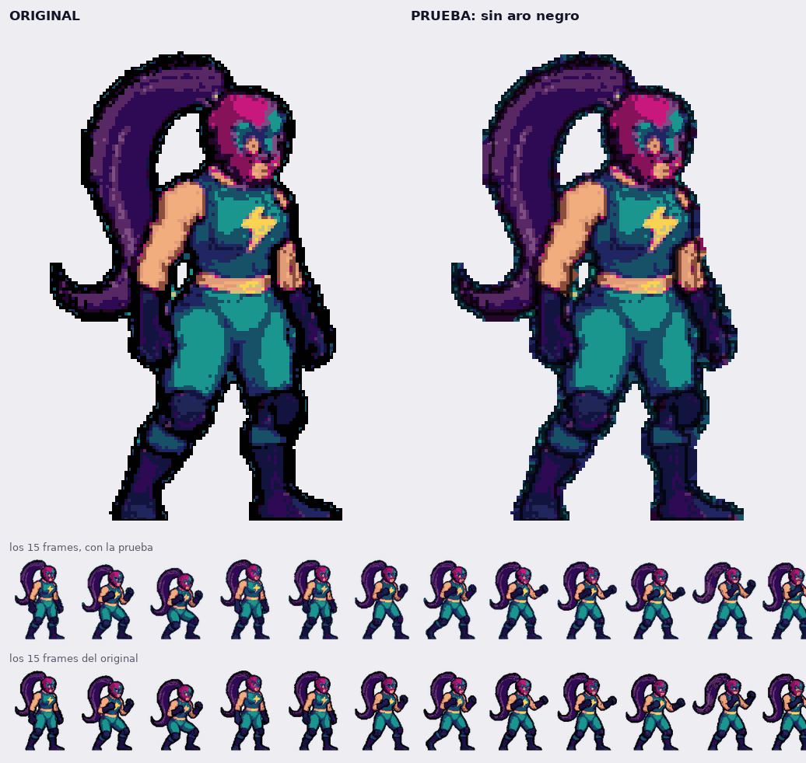
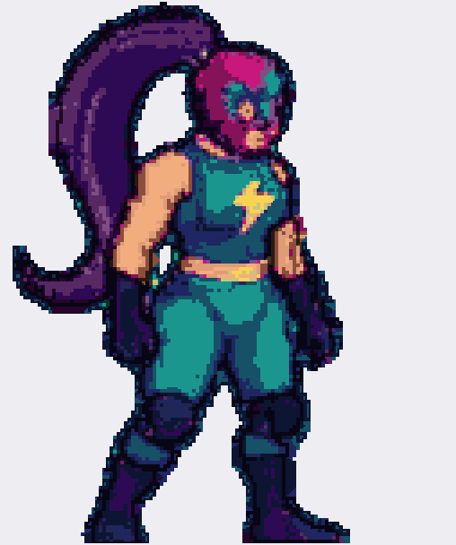
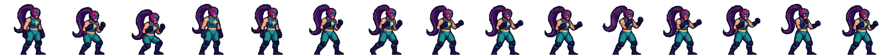

El mismo frame: original y sin el aro (a 2×)

Los 15 frames del stance sin el aro, en movimiento


voltia/outline_fila0.png).Las medidas
| medido en la fila 0 (15 frames) | original | sin el aro |
|---|---|---|
píxeles casi negros (max(r,g,b) ≤ 6) | 143 371 | 0 |
| píxeles opacos | 486 676 | 328 615 (−32,5 %) |
| alto de tinta (mediana de los 15) | 294 px | 287 px (−7) |
| ancho de tinta | 186-240 px | 158-228 px (hasta −26) |
| grosor del aro | 1-2 px en la cara, 10-12 px en la coleta | 0 |
Cómo se hace, y el precio
El negro se separa por topología, no por grosor. El negro conectado con el fondo es el aro y se borra. El negro encerrado por el dibujo es línea de dibujo (brazo sobre torso, rodilla, pliegues) y se queda intacto. Después, 1 px de borde oscurecido al 55 % para que el personaje no flote, y fuera las islas de menos de 12 px.
Por qué no se hace de otra forma, probado antes y descartado:
- Rellenar todo el negro con el color de al lado: se van las líneas internas y queda una pegatina plana.
- Rellenar por difusión desde el borde: la onda corre por dentro del aro, que es un tubo, y el primer color que entra lo inunda: el cian del traje se comía la coleta entera.
- Relleno en línea recta en 8 direcciones: el color es correcto pero salta de un trozo a otro, sale moteado.
- Pintar el aro de su propio color (sin borrarlo): conserva el volumen, pero queda un halo difuminado, no un contorno limpio.
El precio, dicho claro: al quitar el aro el personaje adelgaza exactamente lo que medía el aro (7 px de alto, hasta 26 de ancho), y las piezas que solo estaban separadas por negro se quedan con 1 px de aire (se nota en la zapatilla). No hay dibujo inventado: es el sprite original sin el aro.
Se puede lanzar a la hoja entera con
PYTHONPATH=tools/pylibs python3 tools/voltia_outline.py
(fila a fila: --celdas 0). Escribe hoja aparte, nunca encima de la original.